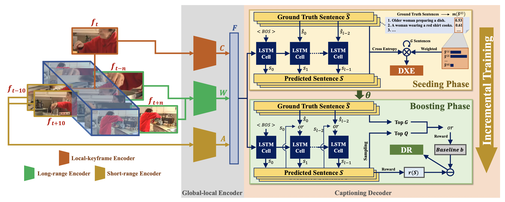

1 Fudan University
2 Facebook AI
3 University of Florida
4 University of Science and Technology of China
5 Sun Yat-sen University
6 Purdue University
7 Rochester Institute of Technology
Proceedings of the 31st International Joint Conference on Artificial Intelligence 2022

Video captioning is a challenging task as it needs to accurately transform visual understanding into natural language description. To date, state-of-the-art methods inadequately model global-local representation across video frames for caption generation, leaving plenty of room for improvement. In this work, we approach the video captioning task from a new perspective and propose a GL-RG framework for video captioning, namely a Global-Local Representation Granularity. Our GL-RG demonstrates three advantages over the prior efforts: 1) we explicitly exploit extensive visual representations from different video ranges to improve linguistic expression; 2) we devise a novel global-local encoder to produce rich semantic vocabulary to obtain a descriptive granularity of video contents across frames; 3) we develop an incremental training strategy which organizes model learning in an incremental fashion to incur an optimal captioning behavior. Experimental results on the challenging MSR-VTT and MSVD datasets show that our DL-RG outperforms recent state-of-the-art methods by a significant margin. Code is available.